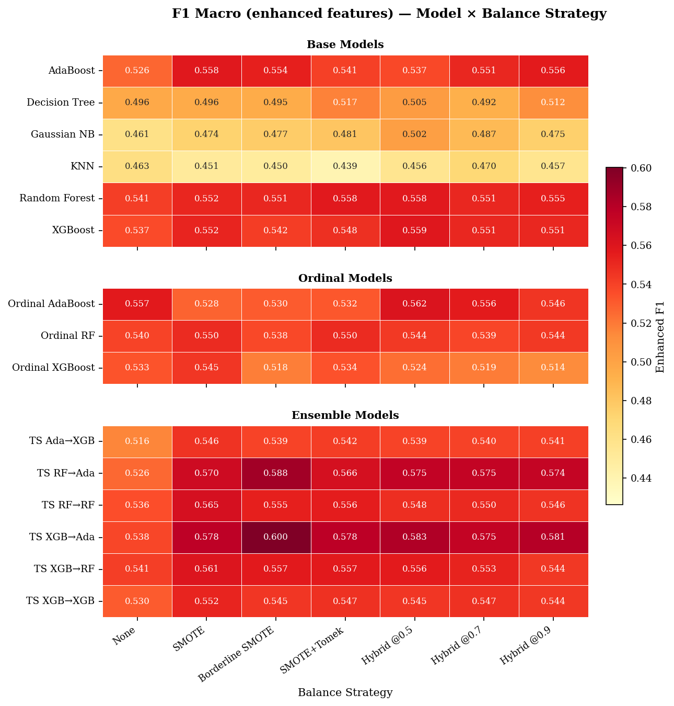

SOLVING THE INVOICE PAYMENT PREDICTION PROBLEM (IPPP):
A MULTI-STAGE APPROACH
Unpaid tuition fees are a growing financial risk for Philippine private schools. Republic Act 11984 (No Permit, No Exam Prohibition Act) bars schools from withholding examination privileges for outstanding balances, eliminating the most direct enforcement mechanism and leaving institutions dependent on proactive cash-flow management.
At the partner institution (a private school in Montalban, Rizal), Bad Debts Expense rose from PHP 244,111 (2019) to PHP 469,102 (2025), with 27 students in arrears and Days Sales Outstanding (DSO) reaching 34 days — despite flexible installment plans.
Machine learning is widely applied to credit scoring, default prediction, and receivables optimization, yet existing invoice payment prediction studies share three critical gaps: (1) they use aggregate student-level features, discarding line-item granularity; (2) they treat payment delay as a nominal problem, ignoring its ordinal structure; (3) they benchmark only 5–8 classifiers, leaving ordinal decompositions, two-stage architectures, and survival-analysis features systematically untested.
- Conduct a large-scale benchmarking study across 1,092 experimental configurations to identify the optimal model–preprocessing combination.
- Develop a two-stage ensemble architecture that first separates delinquent from on-time invoices, then classifies delay severity.
- Evaluate the impact of survival-analysis-derived feature engineering (Cox Proportional Hazards) on classifier sensitivity and recall for late-payment brackets.
- Provide an empirically grounded framework for private schools to transition from reactive collection practices to proactive receivables management.
The pipeline follows seven sequential stages, each mapped to a concrete implementation component in the project codebase. Days to Payment (DTP) — the gap between due date and full settlement — is discretized into four ordinal brackets:
| Class | Label | DTP Range |
|---|---|---|
| 0 | On-Time | ≤ 0 days |
| 1 | Slightly Late | 1–30 days |
| 2 | Moderately Late | 31–60 days |
| 3 | Severely Late | 61+ days |
| Model Family | Peak F1 | Peak AUC | Best Config |
|---|---|---|---|
| Two-Stage | 0.6003 | 0.8919 | XGB→Ada + Borderline-SMOTE |
| Ordinal | 0.5621 | 0.8205 | Ordinal AdaBoost + Hybrid@0.5 |
| Base | 0.5589 | 0.8607 | XGBoost + Hybrid@0.5 |
The two-stage XGBoost→AdaBoost pipeline outperformed the best ordinal model by +0.038 F1 and the best base classifier by +0.041 F1. Gains are not universal across the two-stage family: hierarchical decomposition is most effective when Stage 2 pairs a high-capacity booster with a complementary, lower-variance learner (AdaBoost) rather than a second booster.

- Positive lift: KNN (+0.0061 F1) and Gaussian Naive Bayes (+0.0050 F1) — simpler models benefit from pre-computed temporal risk statistics.
- Negligible to negative: Random Forest, XGBoost, AdaBoost — high-capacity tree ensembles already approximate survival patterns, making Cox features redundant.
Survival feature engineering has conditional, not universal utility — allocate effort based on the downstream learner's capacity.
- Borderline-SMOTE consistently outperformed vanilla SMOTE and no-resampling baselines across all model families.
- Resampling is essential for two-stage models: TS XGB→Ada rises from 0.538 (none) to 0.600 (Borderline-SMOTE) — a +0.062 swing.
- Hybrid undersampling is a stable alternative: TS XGB→Ada @ Hybrid 0.5 = 0.583, only 0.017 below Borderline-SMOTE.
- Weak learners (KNN, GNB) swing most with strategy choice; strong tree ensembles (RF, XGBoost, AdaBoost) stay comparatively robust.
- Spearman ρ = 0.732 (F1 vs. AUC) confirms resampling mainly shifts threshold placement, not underlying class separability.
The three most predictive features across all families — prev_bracket (most recent payment bracket), dtp_wavg (recency-weighted average DTP), and opening_balance_flag (carried unpaid balance) — are all behavioral-historical features only available at line-item granularity, confirming the study's design rationale. LDA corroborates: LD1 explains 79.5% of between-class separation, and 95.9% among delinquent classes alone.
- Hierarchical architectures dominate. Two-stage XGBoost→AdaBoost sets the performance ceiling (F1 = 0.6003, AUC = 0.8919).
- Resampling is indispensable. With ~76% of invoices on-time, Borderline-SMOTE is essential for meaningful recall on the late-payment brackets carrying the greatest financial risk.
- Ordinal structure yields modest, consistent gains — less than full multi-stage decomposition delivers.
- Survival features are model-specific: they benefit probabilistic and distance-based learners but are redundant for high-capacity tree ensembles.
A macro-F1 of 0.60 on a four-class imbalanced problem means the model correctly brackets ~60 of every 100 eventually-late invoices, with most remaining errors landing in adjacent brackets. Against zero forward visibility today, this lets finance officers concentrate outreach on the highest-risk invoices before due dates lapse — earlier reminders, proactive installment restructuring, and social-welfare referrals in place of after-the-fact collection that RA 11984 has rendered largely unenforceable. The framework is directly transferable to any Philippine private school sharing the same installment-billing structure, and the open-sourced prototype operationalizes the winning configuration.